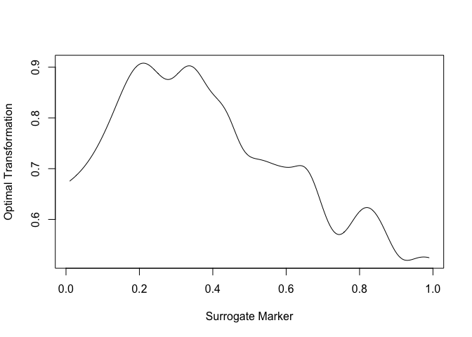

The goal of Optimal Surrogate Survival (OSsurvival) is to nonparametrically estimate the proportion of treatment on the primary outcome explained by a surrogate (PTE) of an optimally transformation of surrogate marker measured at an earlier time. The primary outcome measured at a later time may be subject to censoring.
This is a basic example which shows you how to solve a common problem:
library(OSsurvival) # load the data data("sysdata") # time at which the surrogate is measured t.0 = data.example$t.0 # time at which the primary outcome is measured t = data.example$t # observed survival time xob = data.example$data$xob # surrogate information at t.0 s.ob = data.example$data$s.ob # event indicator deltaob = data.example$data$deltaob # treatment indicator aob = data.example$data$aob # main estimation function # varind: whether to estimate variance; re:number of replications for resampling out = pte.survival(xob, s.ob, deltaob, aob, t, t.0, varind=0, re=100) # estimated PTE out$pte.est #> [1] 0.8413843 # estimated g1 out$g1.est #> [1] -0.0180641 # estimated g2(s) at equally spaced s point plot(out$sgrid, out$gs.est, type="l", xlab = "Surrogate Marker", ylab = "Optimal Transformation")
 The PTE result indicates that this is a moderate to high surrogate marker in this setting.
The observable data for analysis consist of n sets of independent and identically distributed random vectors {Di = (Xi, δi, SiI(Xi ≥ t0), Ai), i = 1, ..., n}, where Ti = Ti(1)Ai + Ti(0)(1 − Ai), Ci = Ci(1)Ai + Ci(0)(1 − Ai), Xi = min(Ti, Ci), the primary outcome Yi = I(Xi > t), the surrogate Si = Si(1)Ai + Si(0)(1 − Ai) is only observed for those with Xi > t0.
The function outputs estimates (and standard error estimates if indicated) of PTE = Δgopt(S)/Δ, the proportion of treatment effect explained quantity based on the ratio between the treatment effect on the optimal transformation of the potential surrogate marker and the treatment effect on the primary outcome, where Δ is the treatment effect on the primary outcome Y; Δgopt(S) is the treatment effect on the optimal transformation of the surrogate gopt(S) = I(T ≤ t0) g1, opt + I(T > t0) g2, opt ≈ I(T > t0) g2, opt.